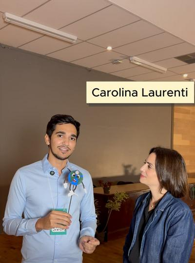
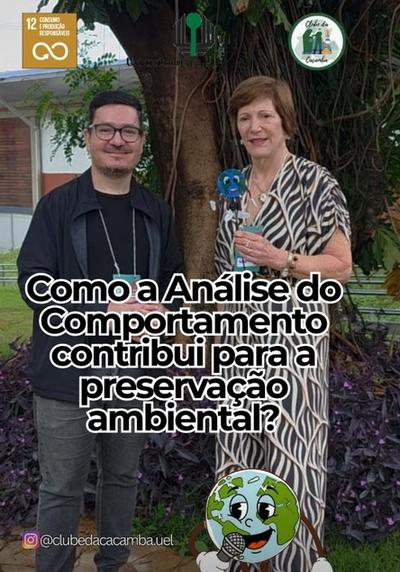
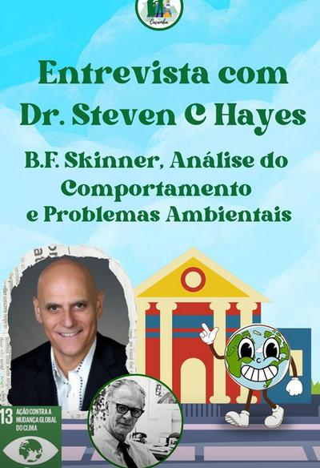
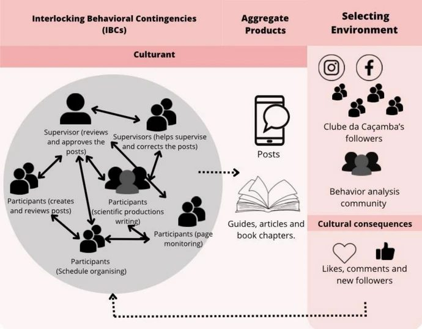

O Clube da Caçamba aplica os princípios da Análise do Comportamento para promover práticas pró-ambientais, produzir conhecimento científico e conectar a universidade com a comunidade.
Quem somos
O Clube da Caçamba é um projeto de pesquisa e extensão da Universidade Estadual de Londrina (UEL), fundado e coordenado pela Profa. Dra. Verônica Bender Haydu, do Departamento de Psicologia Geral e Análise do Comportamento.
Nosso trabalho envolve a produção e difusão de conteúdo de educação ambiental em mídias sociais — Instagram e Facebook — utilizando ferramentas da tecnologia comportamental, alcançando a comunidade local e internacional.
O interesse específico por caçambas nasce do problema ambiental gerado pelo descarte incorreto de resíduos sólidos da construção civil: quando separados corretamente, a maior parte desses resíduos pode ser reciclada.
O projeto integra estudantes de graduação e pós-graduação, promovendo metacontingências voltadas para os Objetivos de Desenvolvimento Sustentável da Agenda 2030 da ONU.
Coordenadora · Depto. de Psicologia Geral e Análise do Comportamento – UEL
Membro do Think Tank sobre Cultura e Análise do Comportamento · Sócia emérita da ABPMC
Graduada em Psicologia pela UEL (primeira turma, 1972). Mestre e doutora pela USP. Pós-doutoral na UFSCar. Lidera o Laboratório de Análises e Tecnologias Comportamentais e o Grupo de Pesquisa CNPq "Análise do Comportamento: Implicações Clínicas e Educacionais".
Objetivos de Desenvolvimento Sustentável
Cidades e Comunidades Sustentáveis — tornar os assentamentos humanos inclusivos, seguros, resilientes e sustentáveis.
Consumo e Produção Responsáveis — assegurar padrões sustentáveis de produção e de consumo.
Ação Climática — medidas urgentes para combater as mudanças climáticas e seus impactos.
Educação de Qualidade — divulgação de conhecimento científico para a comunidade via mídias sociais.
Painel de Destaques
O Clube da Caçamba promove conversas com referências nacionais e internacionais da Análise do Comportamento e do comportamento pró-ambiental.

🎙️ Entrevista · UEM
Conversa com a pesquisadora da UEM sobre fundamentos filosóficos da Análise do Comportamento e sua relação com o meio ambiente.

🎙️ Entrevista
Como a Análise do Comportamento contribui para a preservação ambiental? Uma conversa sobre comportamentos pró-ambientais e sustentabilidade.

⭐ Destaque Internacional🌎 Entrevista Internacional · USA
B.F. Skinner, Análise do Comportamento e Problemas Ambientais. Conversa com o criador da ACT sobre flexibilidade psicológica e sustentabilidade.
Mais entrevistas
Novas entrevistas e conteúdos de educação ambiental toda semana no nosso perfil.
@clubedacacamba.uel ↗Ciência em Ação
O Clube da Caçamba não é apenas uma página de divulgação — é um experimento científico vivo. Um estudo publicado na revista Behavior and Social Issues (Springer, 2025) demonstrou como o projeto funciona como uma metacontingência, modificando efetivamente comportamentos pró-ambientais de seus seguidores através das redes sociais.
Estudantes de graduação e pós-graduação criam e revisam conteúdos educativos. Supervisores revisam, corrigem e aprovam cada publicação. Participantes monitoram a página, organizam a agenda e produzem materiais científicos. Esse conjunto de comportamentos interligados forma as CBEs — a engrenagem interna do Clube.
O resultado das CBEs são os posts publicados no Instagram e Facebook — além de guias, artigos e capítulos de livros. Cada publicação traz instruções verbais fundamentadas na ciência do comportamento: regras que funcionam como antecedentes para comportamentos pró-ambientais fora da internet.
Os seguidores do Clube — e a comunidade da Análise do Comportamento — formam o ambiente que seleciona o que funciona. Curtidas, comentários e novos seguidores são as consequências culturais que retroalimentam o sistema, orientando o tipo de conteúdo a ser produzido.
Metacontingência do Clube da Caçamba – UEL

Fonte: Haydu et al. (2024) apud Celli et al. (2025).
Em todos os meses analisados, os formulários pós-publicação apresentaram maior porcentagem de respostas pró-ambientais em comparação aos formulários pré-publicação, indicando mudança no comportamento verbal dos seguidores (N = 73 participantes, 6 meses de coleta).
Posts sobre descarte de materiais (esmalte, chiclete, lâmpadas) produziram aumento médio de 20% nas respostas pró-ambientais. Todos os entrevistados relataram ter descoberto novos pontos de coleta graças ao conteúdo do Clube.
Para seguidores que já possuíam comportamentos sustentáveis, os posts validaram e reforçaram práticas já existentes. Uma participante relatou: "Os posts encorajam você a aumentar seu comportamento ou acabam validando um comportamento que você já tem."
O estudo conclui que o Clube constitui uma metacontingência e um modelo de intervenção comportamental em nível cultural — conectando academia e comunidade através do ecossistema digital, estando agora em sua terceira geração de estudantes.
Para saber mais
Celli, L., Villa, C. P., Ogata, M. Y., Neves Filho, H. B., Melo, C. M., Freitas, M. C., & Haydu, V. B. (2025). Pro-environmental behavioral changes through science communication in the digital and social media ecosystem: The effects of Clube da Caçamba—UEL project. Behavior and Social Issues, 34, 625–641.
Produção Científica
Conquistas
Uma discente do Clube da Caçamba foi vencedora do Prêmio de Melhor Painel na Associação Brasileira de Psicologia e Medicina do Comportamento, destacando a pesquisa do grupo em nível nacional.
2025 · ABPMCArtigo publicado na revista Behavior and Social Issues (Springer Nature) sobre os efeitos das publicações do Clube no comportamento pró-ambiental de seguidores das redes sociais.
2025 · Springer NatureO Clube da Caçamba conduziu entrevista com o Prof. Steven C. Hayes, criador da Terapia de Aceitação e Compromisso (ACT), explorando conexões entre flexibilidade psicológica e sustentabilidade.
Destaque InternacionalA coordenadora Profa. Dra. Verônica Bender Haydu é sócia emérita da ABPMC, membro do Think Tank sobre Cultura e Análise do Comportamento, e lidera grupo de pesquisa cadastrado no CNPq.
ABPMC · CNPqMembros
Docentes, graduandos e pós-graduandos da UEL trabalhando juntos pela educação ambiental.
Redes Sociais
Conteúdo de educação ambiental, ciência comportamental e sustentabilidade toda semana.